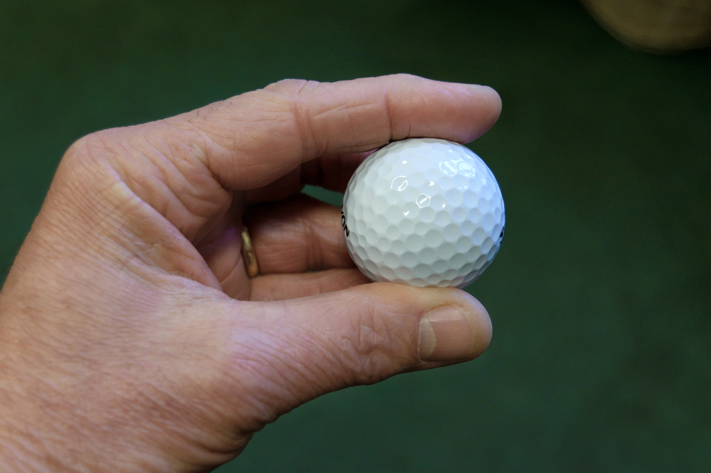

Portfolio
Marine Biologist
I saved a beached whale once. As I watched him struggling I realized something was obstructing his breathing. I could barely see from all of the waves crashing down on top of me but I knew something was there, so I reached my hand and pulled out the obstruction!
Architect
Have you seen the new addition to the Guggenheim? I did that. It didn't take very long either.
Importer/Exporter
I import chips: potato chips, some corn. Also, matches. The long
matches.
I export diapers, but I want to give up the exporting and focus
on the importing.